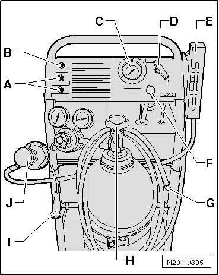
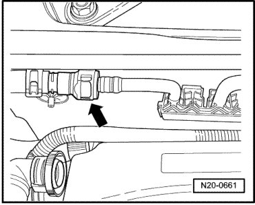
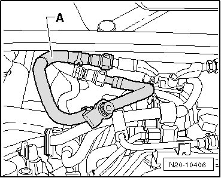
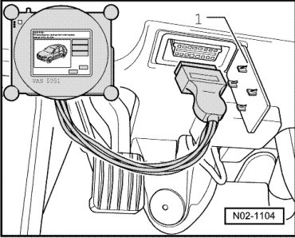
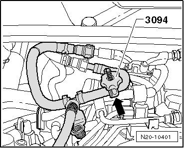
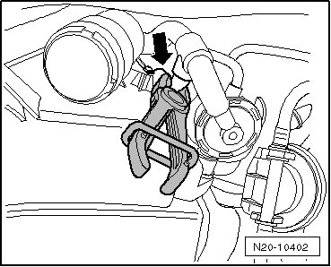
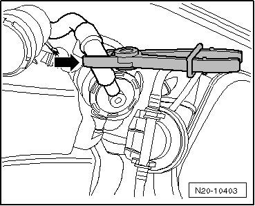
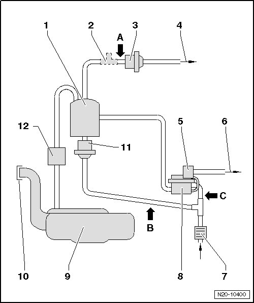
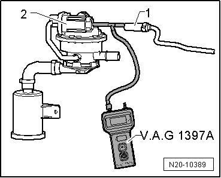

Fuel/EVAP System, Checking for Leaks, through 08.06
Fuel/EVAP System, Checking for Leaks, through 08.06
--> [ EVAP System Overview ]
--> [ Leak Detection Pump, Checking Pressure Build-Up ]
--> [ Leak Detection Pump, Checking Vacuum Supply ]
Special tools, testers and auxiliary items required
• Fuel system tester (smoke tester) (KLI 9210)
• Hose adapter (KLI 9210/55-2)
• Vehicle diagnosis, testing and information system (VAS 5051B), (VAS 5052) or (VAS 5053)
• Hose clamps up to 25 mm diameter (3094)
Test Conditions
• A leak was detected by Leak Detection Pump (LDP) (V144).
• Guided fault finding was performed with vehicle diagnosis, testing and information system.
Evaporative Emissions Tester (KLI 9210) Preparation
• Depending on the version, the appearance of the evaporative emissions tester (KLI 9210) may vary.
- Check on evaporative emissions tester (KLI 9210) whether there is enough fluid in the smoke generator.
- Set valve - D - to "Hold".

- Open nitrogen bottle - H -.
- Connect measuring hose - G - on self-test connection - B -.
- Set valve - D - to "Test".
- Using a pressure reducer - J -, adjust the pressure to 10 in. H2O (25 mbar).
- Set valve - D - to "Hold".
- The pressure must now be maintained min. 2 minutes. If the pressure is not maintained, check the tester.
Fuel System, Checking for Leaks

- Disconnect breather line - arrow - to Evaporative Emission (EVAP) canister purge regulator valve (N80) in engine compartment.
- Connect adapter hose (KLI 9210/55-2) as shown between EVAP canister purge regulator valve (N80) and ventilation line.

- Connect measuring hose - G - on evaporative emissions tester (KLI 9210) to adapter hose (KLI 9210/55-2).
- Connect evaporative emissions tester (KLI 9210) to vehicle battery.
- Connect evaporative emissions tester (KLI 9210) to vehicle.

- Start engine and run at idle speed.
- Select OBD operating mode on evaporative emissions tester (KLI 9210).
- Now select diagnostic mode 8 "Tank leak test".
- Mark "Tank leak test" entry and press right arrow button > to activate the test.
• When diagnostic mode 8 "Tank leak test" is activated, LDP (V144) and EVAP canister purge solenoid valve 2 (N115) are closed for a maximum of 1000 seconds. The EVAP canister purge regulator valve (N80) is not activated. The entire system is now closed.
• If the engine control module stops the test, it can be reactivated by stopping the engine and restarting.
- Set valve - D - to "Test". The fuel system is now filled with nitrogen.
- Observe the pressure gauge - C - and flow meter - E -. The fuel system is filled if the flow quantity decreases and the pressure increases to 10 in. H2O (25 mbar).
• Depending on the level in the fuel tank, this procedure may take up to 3 minutes.
- After the pressure has stabilized, set valve - D - to " Hold".
• After 5 minutes the pressure must not drop below H2O (20 mbar) drop.
If no pressure decrease can be determined, end diagnostic mode 8 and check LDP (V144) pressure buildup. Refer to --> [ Leak Detection Pump, Checking Pressure Build-Up ].
If pressure does not build up or if positive pressure is not maintained for at least 5 minutes, locate leak as follows.
Allow engine to continue running in idle, with diagnostic mode 8 activated.
- First check EVAP canister purge regulator valve (N80) for leaks. Clamp off hose to EVAP canister purge regulator valve (N80) with hose clamp - arrow -.

- Repeat pressure test by resetting valve - D - to " Test".
- Observe pressure gauge and flow meter. The fuel system is filled if the flow quantity decreases and the pressure increases to 10 in. H2O (25 mbar).
- After the pressure has stabilized, set valve - D - to " Hold".
- If pressure now no longer falls, replace EVAP canister purge regulator valve (N80).
If pressure still drops.
- Reset valve - D - to "Test".
- While fuel system is being filled, press smoke generator button - I - for approximately one minute.
The fuel system is now under pressure and filled with smoke.
- Check all visible fuel system lines and hoses for escaping smoke. Also check fuel tank sealing cap.
• Illuminate components and hoses with a strong flood light, the smoke will be more visible.
• To check for leaks at accessible locations, also use ultrasonic measuring device or commercially available leak detection spray.
• Depending on how long fault finding lasts, smoke generator button may have to be pressed again. This ensures there is enough smoke present in the fuel system.
If no malfunctions are detected:
- Remove rear right wheel housing liner.
If smoke comes out of the air filter:
- Clamp off hose between EVAP canister purge solenoid valve 2 (N115) and air filter - arrow -.

- Observe the air filter. If no smoke comes out of it now, the EVAP canister purge solenoid valve 2 (N115) leaks. Replace EVAP canister purge solenoid valve 2 (N115).
If smoke still comes out of air filter:

- Clamp off hose between LDP (V144) and air filter - arrow -.
- Observe air filter. If no smoke comes out of it now, the shut-off valve in the LDP (V144) leaks. Replace the LDP (V144).
If no smoke comes out of the air filter.
- Check all fuel system components and hoses for escaping smoke.
To check fuel pump and fuel filter flange, the assembly opening in the vehicle interior must be opened.
- Replace leaking hoses or components.
After completing the work, perform "Check tank ventilation system for leaks".
EVAP System Overview

1 - Evaporative Emission (EVAP) canister
2 - Adapter hose (KLI 9210/55-2) installation location
• With leak test in fuel system.
3 - EVAP canister purge regulator valve 1 (N80)
4 - Vent line
• Tot Intake manifold.
5 - Solenoid valve
• For Leak detection pump (LDP) (V144).
6 - Vacuum line
• To Intake manifold
7 - Air filter housing
• For LDP (V144)
8 - Leak Detection Pump (LDP) (V144)
9 - Fuel tank
10 - Cap
11 - EVAP canister purge regulator valve 2 (N115)
12 - Pressure retention valve
A - Clamp off here
• With leak test in fuel system.
• To check EVAP canister purge solenoid valve 1 (N80).
B - Clamp off here
• With leak test in fuel system.
• To check EVAP canister purge solenoid valve 2 (N115).
C - Clamp off here
• With leak test in fuel system.
• To check LDP (V144).
Leak Detection Pump, Checking Pressure Build-Up
Test Conditions
• Evaporative emissions tester (KLI 9210) with adapter hose (KLI 9210/55-2) connected to vehicle.
• Valve - D - is at "Hold"
• Diagnostic mode 8 ended and vehicle running at idle.
Fuel system must have no pressure for the test. To release residual pressure, proceed as follows:
- Briefly open quick-release coupling - arrow - on adapter hose (KLI 9210/55-2) to release pressure in fuel system. The pressure gauge - D - must drop to 0 in. H2O.
- Select Guided Functions operating mode on evaporative emissions tester (KLI 9210).
- Select "Check tank ventilation system for leaks" guided function.
- Activate test.
- Observe pressure gauge while test is running.
- The Leak Detection Pump (LDP) (V144) must pump the fuel system pressure up to at least 7 in. H2O (17 mbar).
- If the pressure is not reached, check LDP (V144) vacuum supply. Refer to --> [ Leak Detection Pump, Checking Vacuum Supply ].
- If the fuel system has no leaks and the LDP (V144) vacuum supply is OK, replace LDP (V144).
Leak Detection Pump, Checking Vacuum Supply
Special tools, testers and auxiliary items required
• Turbocharger tester (VAG 1397A)
• T-piece (251 201 346)
• 6 mm dia. hose
• Leak Detection Pump (LDP) (V144) installation location Under wheel housing liner in right rear wheel housing.
- Remove rear right wheel and wheel housing liner.
- Loosen Evaporative Emission (EVAP) canister bolts --> [ (Item 14) Bolts ] and lower it so vacuum line is more easily accessible.
CAUTION!
Support EVAP canister so it does not hang by the hoses and lines. This prevents damage.
- Remove vacuum line - 1 - from LDP (V144).

- Connect turbocharger tester (VAG 1397A) with T-piece and 6 mm dia. hose between vacuum line - 1 - and LDP (V144) - 2 -.
- Switch on measuring range I (absolute pressure measurement).
- Connect vehicle tester and start engine.
- Select Guided Functions operating mode on vehicle diagnostic tester.
- Select "Check tank ventilation system for leaks" guided function.
- While the test is running, observe display on turbocharger tester (VAG 1397A).
• The pressure must pulsate and must not rise above 0.700 bar during the test.
- If the pressure rises above 0.700 bar during the test, the vacuum supply is too low. Check vacuum line to intake manifold for kinks or blockages.